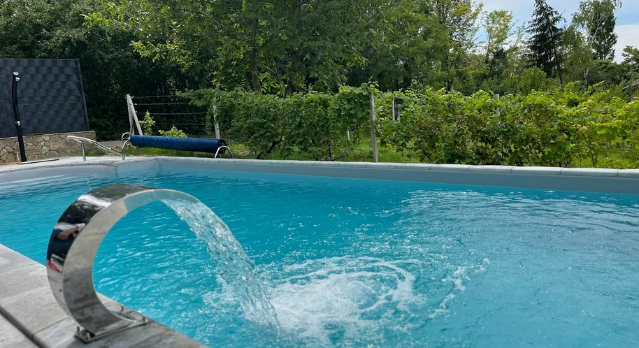

AysegulAytoeren
AysegulAytoeren
Good morning!
Nur das Schöne wird die Welt retten!
Fjodor Dostojewski
Nicht verzagen, Doc Alvers fragen!
Mathematik · Berufliches Gymnasium 11 · KW 48
Die vier Lösungsverfahren
Lineare Gleichungssysteme: vier Wege, ein Schnittpunkt
Nicht verzagen, Doc Alvers fragen!
Der Fahrplan dieser Stunde
Das Ziel: ein Zahlenpaar , das beide Gleichungen erfüllt
Vier Wege: zeichnen, gleichsetzen, einsetzen, addieren
Welcher Weg wann? Dann Sachaufgaben
Zum Schluss: die Dreiecksungleichung
Nicht verzagen, Doc Alvers fragen!
Kapitel 01
Das Ziel
Zwei Gleichungen, ein Zahlenpaar
Nicht verzagen, Doc Alvers fragen!
Was ist ein lineares Gleichungssystem?
Zwei Gleichungen mit denselben Unbekannten und :
I:
II:
Gesucht: ein Paar , das beide zugleich erfüllt
passt in I: ✓, aber nicht in II: ✗
passt in beide: ✓ und ✓
Also
Nicht verzagen, Doc Alvers fragen!
Die Lösung im Bild
Jede Gleichung ist eine Gerade:
I: alle Paare mit
II: alle Paare mit
liegt nur auf I: passt nicht in II
liegt auf beiden: der Schnittpunkt
Nicht verzagen, Doc Alvers fragen!
Kapitel 02
Zeichnerisch lösen
Wann? Wenn die Lösung auf dem Gitter liegt
Nicht verzagen, Doc Alvers fragen!
Beispiel: zeichnerisch
I:
II:
1. Nach umformen: und
2. Gerade I durch und
3. Gerade II durch und
4. Schnittpunkt ablesen:
5. Probe: ✓ und ✓
Nicht verzagen, Doc Alvers fragen!
So geht das zeichnerische Lösen
Beide Gleichungen nach umformen
Beide Geraden in ein Koordinatensystem zeichnen
Den Schnittpunkt ablesen und die Probe machen
Grenze: liegt der Schnittpunkt nicht auf dem Gitter, wird Ablesen ungenau
Nicht verzagen, Doc Alvers fragen!
Im Mathe-Labor: zwei Geraden
Zieht an den Geraden: der Schnittpunkt und die Gleichungen ändern sich mit
Nicht verzagen, Doc Alvers fragen!
Jetzt ihr: zeichnerisch
Löst zeichnerisch und macht die Probe:
I:
II:
Schnittpunkt:
Probe: ✓ und ✓
Nicht verzagen, Doc Alvers fragen!
Kapitel 03
Gleichsetzungsverfahren
Wann? Wenn beide Gleichungen schon nach y aufgelöst sind
Nicht verzagen, Doc Alvers fragen!
Beispiel: gleichsetzen
Beide Gleichungen beginnen mit :
I:
II:
Gleichsetzen:
, also
in II:
Probe: ✓ und ✓
Nicht verzagen, Doc Alvers fragen!
Gleichsetzen im Bild
Beide Gleichungen beginnen mit
Gleichsetzen fragt: bei welchem sind
beide gleich?
Bei haben beide
Ablesen wäre hier ungenau, Rechnen ist exakt
Nicht verzagen, Doc Alvers fragen!
So geht das Gleichsetzungsverfahren
Beide Gleichungen nach derselben Variablen auflösen
Die anderen Seiten gleichsetzen: eine Gleichung, eine Unbekannte
Diese Variable berechnen, dann in eine Gleichung einsetzen
Probe in beiden Gleichungen, dann notieren
Nicht verzagen, Doc Alvers fragen!
Jetzt ihr: gleichsetzen
Löst mit dem Gleichsetzungsverfahren:
I:
II:
, also
in II:
Probe: ✓ und ✓
Nicht verzagen, Doc Alvers fragen!
Im Mathe-Labor: Schritt für Schritt
Im Kasten „Schritt für Schritt rechnen“ das Gleichsetzungsverfahren wählen: erst selbst rechnen, dann aufdecken
Nicht verzagen, Doc Alvers fragen!
Kapitel 04
Einsetzungsverfahren
Wann? Wenn eine Variable schon allein steht
Nicht verzagen, Doc Alvers fragen!
Beispiel: einsetzen
In II steht schon allein:
I:
II:
II in I einsetzen, mit Klammer:
, also
, also
in II:
Probe: ✓ und ✓
Nicht verzagen, Doc Alvers fragen!
Einsetzen im Bild
Auf Gerade II gilt immer
Einsetzen prüft ihre Punkte in I: ?
: ✗
: ✗
: ✓
prüft alle auf einmal
I
II
Nicht verzagen, Doc Alvers fragen!
So geht das Einsetzungsverfahren
Eine Gleichung nach einer Variablen auflösen (oft steht sie schon so da)
Diesen Term in die andere Gleichung einsetzen, mit Klammern
Die Gleichung mit einer Unbekannten lösen
Die zweite Variable berechnen, Probe, dann notieren
Nicht verzagen, Doc Alvers fragen!
Jetzt ihr: einsetzen
Löst mit dem Einsetzungsverfahren:
I:
II:
I in II:
, also
, also
in I:
Probe: ✓ und ✓
Nicht verzagen, Doc Alvers fragen!
Im Mathe-Labor: Schritt für Schritt
Im Kasten „Schritt für Schritt rechnen“ das Einsetzungsverfahren wählen: erst selbst rechnen, dann aufdecken
Nicht verzagen, Doc Alvers fragen!
Kapitel 05
Additionsverfahren
Wann? Wenn beim Addieren eine Variable wegfällt
Nicht verzagen, Doc Alvers fragen!
Beispiel: addieren
Vor stehen und :
I:
II:
I II:
, also
in I: , also und
Probe: ✓ und ✓
Nicht verzagen, Doc Alvers fragen!
Addieren im Bild
I:
II:
I II: , das fällt weg
Auch das ist eine Gerade: , senkrecht
Sie geht durch den Schnittpunkt
I
II
Nicht verzagen, Doc Alvers fragen!
Wenn nichts von selbst wegfällt
Vor stehen und , das hebt sich noch nicht auf:
I:
II:
II mal 2: , jetzt stehen und da
Jetzt addieren: , also
in II: , also
Probe: ✓ und ✓
Nicht verzagen, Doc Alvers fragen!
So geht das Additionsverfahren
Mit Zahlen multiplizieren, bis vor einer Variablen Gegenzahlen stehen
Addieren: diese Variable fällt weg, die andere berechnen
In eine Gleichung einsetzen, die zweite Variable berechnen
Probe in beiden Gleichungen, dann notieren
Nicht verzagen, Doc Alvers fragen!
Jetzt ihr: addieren
Löst mit dem Additionsverfahren:
I:
II:
Vor steht zweimal : II mal ergibt
Addieren: , also
in II: , also
Probe: ✓ und ✓
Nicht verzagen, Doc Alvers fragen!
Im Mathe-Labor: Schritt für Schritt
Im Kasten „Schritt für Schritt rechnen“ das Additionsverfahren wählen: erst selbst rechnen, dann aufdecken
Nicht verzagen, Doc Alvers fragen!
Kapitel 06
Welches Verfahren wann?
Erst hinschauen, dann rechnen
Nicht verzagen, Doc Alvers fragen!
Ein System, drei Wege
Das System aus dem Additionsverfahren:
I:
II:
Addieren: I II ergibt , also
Einsetzen: II nach ergibt , mit Kommazahlen
Gleichsetzen: beide nach , dann
Jedes Mal , Addieren ist am kürzesten
Nicht verzagen, Doc Alvers fragen!
Welches Verfahren passt?
System A
I:
II:
gleichsetzen
beide beginnen mit
System B
I:
II:
einsetzen
steht schon allein
System C
I:
II:
addieren
und heben sich auf
Nicht verzagen, Doc Alvers fragen!
Alle Verfahren führen zur selben Lösung. Wähle das Verfahren, das am wenigsten Rechnung kostet: Steht eine Variable allein, setze ein. Sind beide nach y aufgelöst, setze gleich. Heben sich Terme auf, addiere.
Merksatz
Nicht verzagen, Doc Alvers fragen!
Kapitel 07
Sachaufgaben
Vom Text zum Gleichungssystem
Nicht verzagen, Doc Alvers fragen!
Die Strategie in vier Schritten
Variablen einführen — was genau ist gesucht?
Gleichungen aufstellen — jede Information im Text wird eine Gleichung
Gleichungssystem lösen — mit dem Verfahren, das am wenigsten Rechnung kostet
Ergebnis prüfen und einen Antwortsatz schreiben
Nicht verzagen, Doc Alvers fragen!
Kirsch und Banane
Kirschnektar hat 50 % Frucht, Bananennektar 30 %
Gesucht: 1 Liter Mischung mit 45 % Frucht
: Liter Kirsch, : Liter Banane
I: (Menge)
II: (Frucht)
Aus I: , in II:
Also und
Probe: ✓ und ✓
: 750 ml Kirsch, 250 ml Banane
Nicht verzagen, Doc Alvers fragen!
Löwen und Strauße
Ein Ranger zählt 6 Köpfe und 20 Beine: wie viele Löwen, wie viele Strauße?
: Löwen, : Strauße
I: (Köpfe)
II: (Beine)
I mal : , jetzt stehen und da
Addieren: , also
in I: , also
Probe: ✓ und ✓
: 4 Löwen und 2 Strauße
Nicht verzagen, Doc Alvers fragen!
Zwei Pumpen
, : Anteil des Beckens, den Pumpe I bzw. II in einer Minute füllt
I:
II:
I II:
in II:
Probe: ✓ und ✓
: Pumpe I allein 441 min
Pumpe II allein: min, also 176 min 24 s

Nicht verzagen, Doc Alvers fragen!
Bei Sachaufgaben zählt der Ansatz: Variablen klar benennen, jede Information wird eine Gleichung — und am Ende prüfen, ob die Lösung zur Wirklichkeit passt.
Merksatz
Nicht verzagen, Doc Alvers fragen!
Kapitel 08
Zum Schluss: die Dreiecksungleichung
Wann aus drei Strecken ein Dreieck wird
Nicht verzagen, Doc Alvers fragen!
Drei Stäbe, ein Dreieck?
Stäbe , und cm
ein Dreieck ✓
Lücke
Stäbe , und cm
sie erreichen sich nicht ✗
Stäbe , und cm
es bleibt platt ✗
Nicht verzagen, Doc Alvers fragen!
Die Dreiecksungleichung
Zwei Seiten zusammen sind länger als die dritte:
Praktisch: die zwei kürzeren Seiten mit der längsten vergleichen
, und cm: , ein Dreieck ✓
, und cm: , kein Dreieck ✗
Nicht verzagen, Doc Alvers fragen!
Im Mathe-Labor: drei Seiten frei wählen
Zieht Seite länger als : was passiert mit dem Dreieck?
Nicht verzagen, Doc Alvers fragen!
Gleichschenkliges Dreieck mit Umfang 8
Basis , zwei Schenkel , Umfang 8:
Eine Gleichung, zwei Unbekannte: unendlich viele Paare
Nach : , also
ergibt : , ein Dreieck ✓
ergibt : , kein Dreieck ✗
Ein Dreieck nur, wenn , also und
Nicht verzagen, Doc Alvers fragen!
Umfang 8 im Bild
Basis , Schenkel :
,
✓
,
✗
Dreieck für
kein Dreieck für
Nicht verzagen, Doc Alvers fragen!
Ausprobieren: der Umfang bleibt fest
Schiebt den Regler für die Basis — was passiert mit den Schenkeln, und ab wann gibt es kein Dreieck mehr?
Nicht verzagen, Doc Alvers fragen!
Jetzt ihr
Vor jeder Aufgabe erst hinschauen: welches Verfahren spart Rechnung?
Jede Lösung endet mit der Probe und
Bei Sachaufgaben: passt die Lösung zur Wirklichkeit?
Übung macht die Meisterin und den Meister
Nicht verzagen, Doc Alvers fragen!